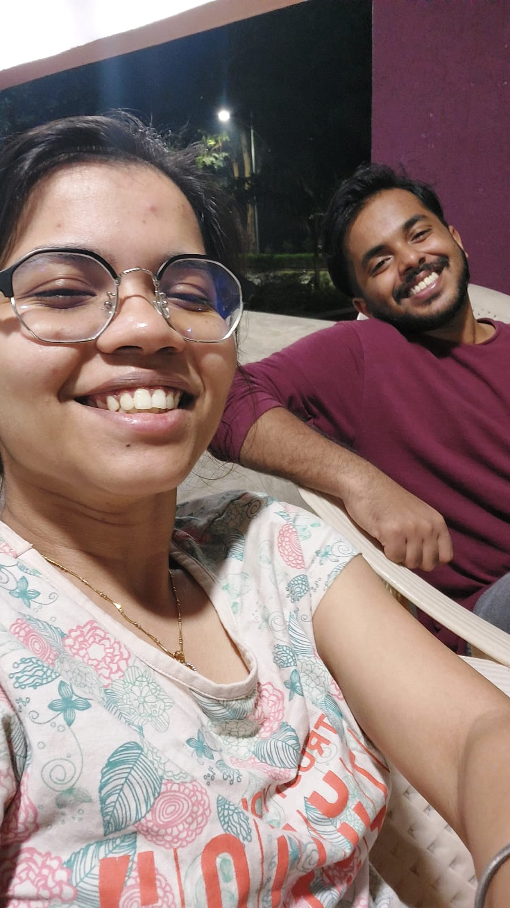
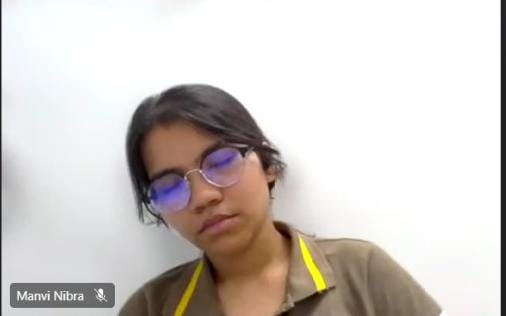
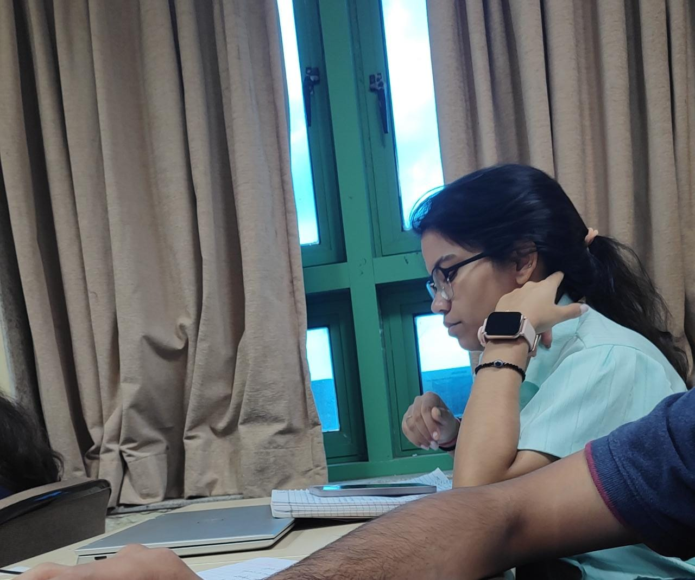
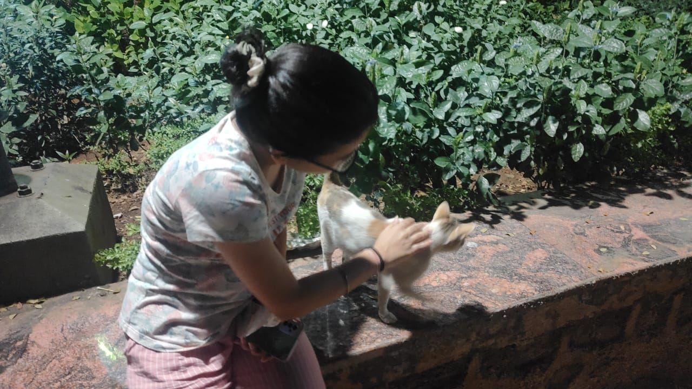

Happy Happyyyyy new year mannuuuu nibraaa 💙 💙
As you very well know, I am super bored, soooo thought I'll wish you new year in a decent fashion haha. Its been 162 days since we had our Gocrackit GD. Yes, I calculated and scrolled up till the top. It certainly has been a wonderful 162 days, with lots of days consoling each other and lots of walks. Cheers to all the happy days and praying that we get to spend more time together.

I am honestly a very lazy asshole. When I saw the pond for the first time, I decided never to walk around it LOL🤣. But you managed to make me thoda less lazy and make me walk around the pond so kudos to you.
I guess its time for Thank youssss. Thank you for listening to this random ass'es wierd theories and tolerating his obsession with wierd mangas and animes. Oh, and never forgetting this, thanks for dealing with my maggi with Oreo combo and other wierd mixes I do.
I am a super serious guy most of the time LOL (around 80% of the time). I do joke, but there used to be like tons of thoughts just flowing through my head, making me lose focus on things in front of me. I dont know why, but hanging around with you is enough fun that I am more relaxed and in control of things. Its you and the mallu gang that has made these 2 modules soo much fun soo thanks.
next is appreciation time, Muhahahahahah
- Mannu, you cute
- Mannu, you smart
- Mannu, your smile is cute
- Mannu, How do I get bored soo fast lol
Anyways, I hoped you liked this wish. I wanted to make it a bit more grand, haha, but I also had to work on another wish for the mallus so didnt get enough time. Sorry :{{. Lets both pray to have an amazing year ahead, with happiness, academic growth and personal growth. Let all our worries just go away and that we have a lot of drink parties and lots of walks through the pond.
Sending you virtual hugssssss. Cheers and Happy new year